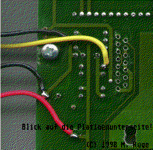
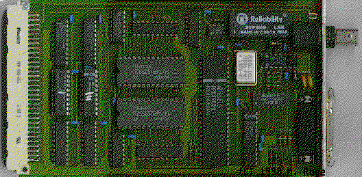

Previous
Next
TOC
Falls jemand vorhat den DMA-Knoten in ein vorhandenes Towergehäuse
umzubauen, sollte man den L296 Baustein (oberhalb des Schriftzuges
,,BIONET 2.1'') entfernen und direkt sich die Spannungsversorgung
vom Towernetzteil herholen. Der L296 schwingt abundzu mal und nach
dem Anschluß bei mir im Rechner ergaben sich Startschwierigkeiten
der Festplatten. Wo die entsprechenden Drähte angelötet werden
müssen, sehen Sie in der folgenden Abbildung:

Die VME Bus Karte

Die VME Bus Karte verfügt über 64 KBytes shared memory und ist zur
Netzwerkkommunikation ebenfalls (wie die anderen Bionet Produkte
auch) mit dem DP 8390 Chipset von National Semiconductor ausgestat-
tet. Die eingesetzte Technologie ermöglicht extrem hohe Transferge-
schwindigkeiten über das Netzwerk. So werden effektive Übertragungs-
raten von bis zu 550 Kilobyte pro Sekunde erzielt. Die Bionet VME
Bus Karte ist auf die Adresse feal 0000 fest eingestellt. Auf der
Rückseite der Platine befindet sich sowohl ein Cheapernet- als auch
ein Ethernetausgang. Die Karte ist werksseitig auf Cheapernet einge-
stellt. Die beiden Jumper auf der Platine dienen der Umstellung von
Cheapernet auf Ethernet. Wenn beide Jumper gezogen sind, ist die
Platine auf Thick Ethernet konfiguriert.
Kapitel Das Bionet 100 Netzwerk, Seite 4